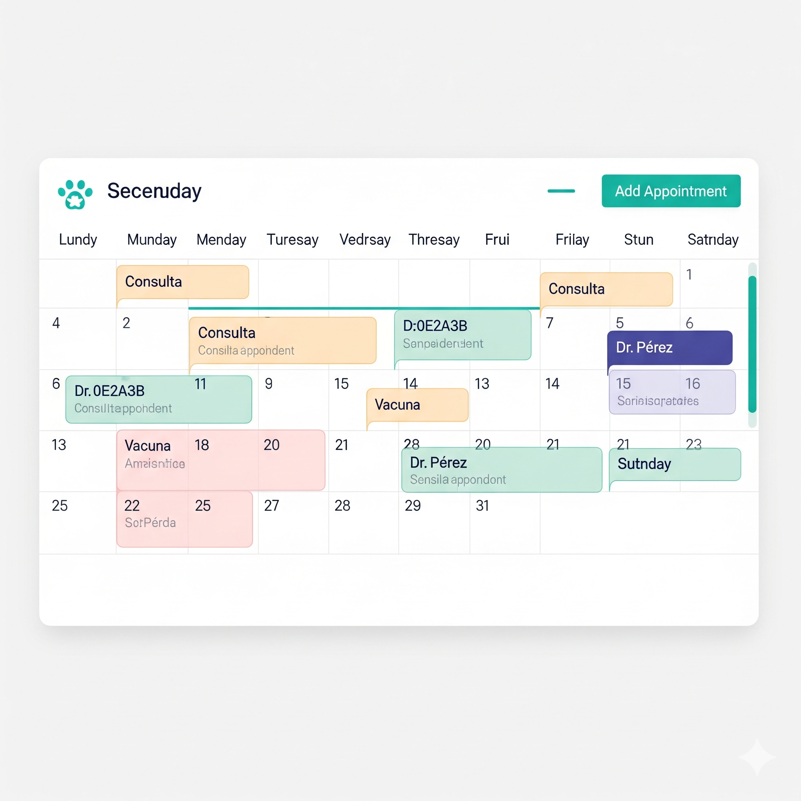

Agenda veterinaria
Organiza citas, profesionales, horarios y atención diaria desde un mismo calendario.
Software veterinario desarrollado en Chile
Mascotiva reúne agenda, tutores, pacientes, fichas clínicas, caja e inventario en una plataforma diseñada para ordenar el trabajo diario de clínicas veterinarias.
Mascotiva 2.0 se encuentra actualmente en desarrollo y validación operativa.

Nuestra historia
Mascotiva comenzó como respuesta a necesidades reales de gestión veterinaria, incluso antes del nacimiento de Universo Vet. Desde entonces, ambos proyectos han crecido juntos: cada flujo se diseña, prueba y mejora desde la experiencia cotidiana de una clínica en funcionamiento.
Funcionalidades
Estas áreas reflejan módulos implementados o en validación dentro del desarrollo actual de Mascotiva 2.0.
Organiza citas, profesionales, horarios y atención diaria desde un mismo calendario.
Mantén ordenados los datos de contacto, mascotas e historial asociado a cada familia.
Registra atenciones, antecedentes, diagnósticos, tratamientos, medicamentos y próximos controles.
Registra ventas, pagos, saldos pendientes, devoluciones y movimientos diarios de caja.
Controla productos, movimientos de stock y descuentos asociados a ventas pagadas.

Prepara presupuestos y documentos vinculados con la atención veterinaria.
Estado del proyecto
Mascotiva 2.0 está siendo construida y validada por etapas. Preferimos comunicar con claridad qué está disponible, qué se encuentra en revisión y qué forma parte de la hoja de ruta.
Agenda, tutores y pacientes
En validación
Fichas clínicas
En validación
Caja, ventas e inventario
En validación
Documentos clínicos y prevención
En desarrollo
Portal Mi Mascota
En desarrollo
Recordatorios por WhatsApp
Hoja de ruta
Integración tributaria
En evaluación
Multi-sucursal
Hoja de ruta
Acceso temprano
Estamos preparando Mascotiva 2.0 para sus primeras implementaciones fuera de Universo Vet. Las clínicas interesadas podrán conocer el proyecto y participar en futuras etapas piloto con acompañamiento cercano.
Postulaciones próximamentePublicaremos aquí el canal oficial de inscripción cuando se abra la primera etapa piloto.